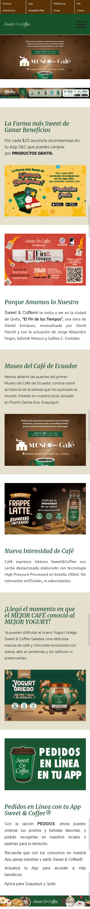

PARC:Alignment
Sweet and coffe is a web site that show many principles, in this part i want highlight the principle of PARC: Alignment which we can observe in all the content of the main page, each paragraph and image are aligned on the same axis centered on the page, which makes the site solid and orderly, easy to read and understand for the user.
PARC:Alignment
In the following website we can see that the rule of thirds is used when highlighting and emphasizing the photos throughout the home page of the site, showing the beauty of the vacation place of this page, the photos show key points of the pictures.